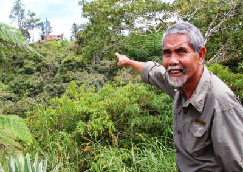
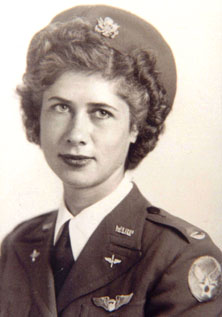
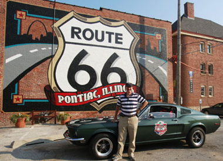
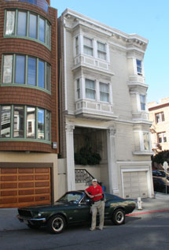
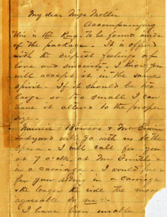

Vanuatu – the Wildest, Wackiest Country You Never Heard Of
Lew lived for three years in the Republic of Vanuatu in the southwest Pacific, while working in the Prime Minister’s Office, and led several expeditions to outer islands in the large volcanic archipelago. This series of three lectures on Vanuatu covers the tribe the worships Prince Philip as a god, the John Frum cargo cult, the super-yacht, super-model, super-scandal that rocked the country for a year, the astounding death-defying practice of land-diving headfirst into the dirt from a 90-foot tower, the previously undiscovered female chiefs, and the wacky political scandals that led to a third of Parliament being put in jail. (Hmmmm, maybe we could learn something there....)
ESILL Class 1(PDF)
ESILL Class 2(PDF)
ESILL Class 3(PDF)

Land diving is just one of the wild and wacky things to love about Vanuatu, one of the world’s most exotic countries. Lew tells you how you, too, can throw yourself off a 90-foot tower – and possibly survive!
|
Carrying the Explorers Club Flag from Alabama to Vanuatu
Lew has had the honor of carrying the Flag of The Explorers Club on ten expeditions. This lecture, given in July 2020 to an international audience as part of an Explorers Club Washington Group presentation, describes some of these efforts, and goes into detail on his various expeditions to the “real Bali Hai,” namely Ambae island in northern Vanuatu.
Carrying the Explorers Club Flag from Alabama to Vanuatu(PDF)

Lew holds Flag #212 of The Explorers Club, while whispering wise counsel on constitutional law to President James Madison, the “Father of the US Constitution.” Dolley Madison looks on approvingly. Lew and other volunteers are at Madison’s Montpelier plantation in Virginia, looking for archaeological traces of the enslaved people whose free labor financed Madison’s intense study, that led to his revolutionary constitutional proposals.
|
Search for the Missing Monastery of King St. Oswald on the Holy Island of Lindisfarne
Lew participates in an archaeological expedition to find the missing monastery of King St. Oswald of Northumbria. This monastery was famously attacked in 793 AD by Viking raiders, and this event opened the 250 year Age of Vikings. Learn how you, too, can participate in the search effort, which is still on-going.
Missing Monastery on Lindisfarne Archaeology Briefing(PDF)

Lew and other volunteer archaeologists on Lindisfarne, in a huge trench, digging for a missing monastery. Lew is holding Flag #50 of The Explorers Club – this particular flag went into space with Virgin Galactic and around the world on the first solar-powered flight.
|
Search for the Missing Plantation and Battlefield of General Andrew Williamson
Lew gives a briefing on the search for the missing plantation, battlefield and Revolutionary War POW camp at White Hall, the plantation of Brig. Gen. Andrew Williamson of the South Carolina militia. Williamson was the “Benedict Arnold of South Carolina,” who went over to the British side in the summer of 1780, but then spied against the British for the last year of the war, during their occupation of Charleston. Williamson’s important up-country plantation is still missing, and three expeditions have failed to locate it – more work to do!
Search for White Hall of Gen Williamson-2019(PDF)
Somewhere in this four-square-mile LiDAR landscape of northern South Carolina is hidden the missing plantation house and Revolutionary arms depot, battlefield and POW camp of General Andrew Williamson (Lew’s fifth great-grandfather), the “Benedict Arnold of South Carolina,” and the first major double agent in US history. But where is it???
White Hall LiDAR image(PDF)
The Disappearance of Jim Thompson, the Missing “Silk King of Thailand”
Jim Thompson was one of the most famous Americans in Southeast Asia in the 1950s and ‘60s. He was a CIA asset, built the Thai silk industry, and created a fabulous house/museum in Bangkok that is still a top tourist attraction. He disappeared in March 1967 while on a short stroll in the high jungle of Malaysia. Lew undertakes the first-ever scientific evaluation of search for Thompson, which was likely the largest search on land in SE Asia. In his talk he advances the case for the first time in almost 50 years, and lays out a road map to a possible solution.

Captain Mohammad, Malaysian Army, search leader for Jim Thompson in 1967.
|
The Female Chiefs of Vanuatu
For over 120 years anthropologists and writers have stated or assumed that ther are no “female chiefs” in the Republic of Vanuatu or even in the Melanesian region of the Pacific. While serving in the Vanuatu Prime Minister’s Office, Lew learned that some female chiefs might exist. He organized and led an Explorers Club Flag Expedition to find, interview and document these amazing women. In his lecture, Lew describes the strange sacred pig-killing ceremony the female chiefs go through, their powers and numbers, and speculates on how they stayed hidden for so long.
|
Doreen Leona, a Female Chief of north Pentecost Island in Vanuatu, wearing the circular tusk of the sacred pig she killed to become a chief, face paint, sacred red mats, and other insignia of her status.
|
Enter the Secret World of London Clubs
Lew and Susan visit “gentlemen’s clubs” that are normally closed to outsiders. No, not THAT kind of gentlemen’s clubs! Clubs like the Reform Club, the Carleton, the Travellers, the Caledonian and the Lansdowne, where Disraeli, Gladstone, Churchill, Dickens and even Ben Franklin wined and dined. These clubs are usually gorgeous, often have royal members and associations, and Lew will tell you how you too can visit them or even become a member.
|
Exterior of the Reform Club, London, in Pall Mall.
|
The Search for the Last Missing W.A.S.P.
The Women Airforce Service Pilots of World War II flew tens of thousands of planes millions of miles, and contributed mightily to the war effort. Only one WASP went missing and was never found – Gertrude Tompkins. Lew becomes the co-leader and research director of a Missing Aircraft Search Team Expedition to find her. The Expedition doesn’t find Gertrude and her powerful P-51-D Mustang, but they do find two other planes, including a missing USAF jet.

Gertrude Tompkins, the last missing WASP (Women Airforce Service Pilot) of World War II.
|
The Search for Steve Fossett
Adventurer and flier Steve Fossett disappeared in a light plane in Nevada, and this resulted in the biggest aerial search in US history. Steve was a Fellow of the Explorers Club, and Lew and other Club members launched an expedition to find him. This talk reveals details of the disappearance never before discussed in the press, describes how Lew’s team helped close the case, and provides insights into the state of search and rescue in this country.
What to Look for When Searching for Missing Light Aircraft
A briefing for emergency management personnel, search and rescue volunteers, aerial searchers, and family searchers. Shows pictures of actual light airplane crashes, so that such personnel will know what to look for. Describes typical scenarios for crashes. Can be expanded to include findings and how-to-do-it explanations from Lew’s manuscript,
A Manual on Finding Missing Light Aircraft.
A Bullitt Fired Down Route 66
Lew and Susan drive down Route 66, one of the most famous roads in the world, in their classic 1968 “Bullitt” Mustang. Along the way they re-discover the Fabulous Fifties, dodge freaked-out Finns, meet Superman, and eat the Bobcat Bite Burger -- the best burger in the West.

Route 66 museum in Pontiac, Illinois, and the Bullitt Mustang.
|
A crazy balloon at the fabulous Albuquerque Balloon Festival.
|
Up the Pacific Coast Highway: “Bullitt” Goes Home
Lew and Susan drive north from San Diego to Portland, Oregon on the famous PCH – the Pacific Coast Highway. They explore Forest Lawn, find the hidden airplane hanger and house of Steve McQueen, take the Bullitt Mustang up and down the hills of San Francisco, stop at all the Bullitt movie locations, drive through a massive Redwood tree, and find the sea glass capital of the world.

Lew and the “Bullitt” Mustang pay a reverent visit to the shrine of Frank Bullitt’s apartment in San Francisco. The shade of Steve McQueen smiled.
|
Inside the Carmel Mission, California.
|
Lewis and Clark in Reverse
Lew and Susan head north from Portland, Oregon to Seattle, dodging Mt. St. Helens. Then it’s southeast along the Lewis and Clark trail to track down the Welsh-speaking Mandan Indians, shop the Mall of America (the Pinnacle of Western Civilization), cross the Mighty Mo, see Tippecanoe and Doozies too, and head on home.
The Search for White Hall and General Andrew Williamson
Brigadier General Andrew Williamson of the South Carolina militia, (Lew’s great-gggg-grandfather) was a household name during the American Revolution. He commanded at the first major battle in South Carolina, led a successful campaign against the Indians, and was promoted several times. But after the fall of Charleston he took British protection. After the war his property was going to be seized by the Patriots, but he revealed he had been spying against the British for almost a year, making him America’s first major double agent. His important plantation of White Hall, site of a battle, arms depot, fort and prison, is now missing, and Lew sets out to find it, while writing the first biography of the General.
The Search for the Lost Ghost Town of Washington Court House
Lew uses a “treasure map” left by his dad to try to find the lost ghost town and grave of Judge Harry Toulmin (1766-1823), one of the founders of Alabama. With the help of archaeologists and ground penetration radar from the University of South Alabama, and carrying the Flag of the Explorers Club, he finds the town but not the grave. Still looking for that one!
The Love Letters of Judge Harry T. Toulmin (1835-1916), CSA
In 1869, Lew’s great-great grand uncle, a famous judge, fell head over heels in love with the lovely Molly Henshaw. The Judge and ex-Confederate Colonel was 34 and she was just 19. Despite their age differences, it was a match made in heaven, as shown by their preserved original love letters. Lew gives the highlights of their star-crossed romance with excerpts from the letters, which also give a good picture of life in the deep South just after “the Wawah” – a life not as bleak as portrayed by most historians.

1869 letter from Judge and Colonel Harry T. Toulmin, C.S.A. to his sweetheart Mollie Henshaw, enclosing their engagement ring. Click image to enlarge.
|
The Duggar Family of Virginia and Alabama
Gives a fascinating description of an American family and its genealogy from the Revolution to the present. Of interest to Duggars or Duggers, and also to persons who want to see what can be done to enliven and create a colorful Powerpoint briefing about their family history and genealogy.
Improving Telecommunications Performance in Less Developed Countries
This lecture focuses on improving telecoms performance via privatization, increasing competition, and setting up well-organized telecom regulatory bodies in less developed countries. The advantages and disadvantages of privatization are discussed. This section is followed by a four step process for ensuring that national telecom goals are met by the privatization and sector reform.